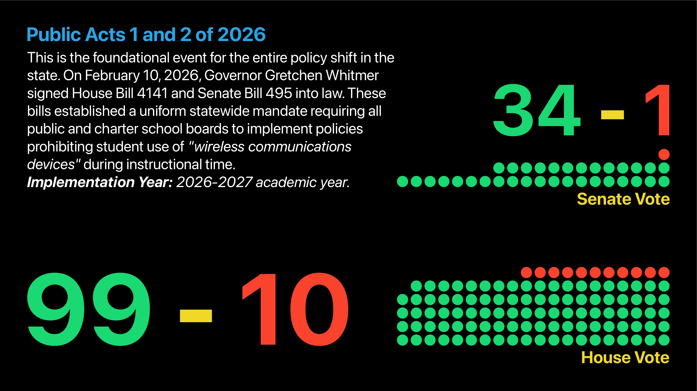

CLICK HERE ONCE TO ACTIVATE SCREEN
TEST YOUR
ATTENTION SPAN
SCAN TO START
↓
PLAYER
IS READY TO PLAY
0
Did you know?
5
YOU LOSE
ATTENTION TIME
0:00 minutes
FACTS READED
0 facts, interesting?
COLORS MEMORIZED
0 colors, good job!
AVERAGE SCORE
5 colors, you're locked in!
